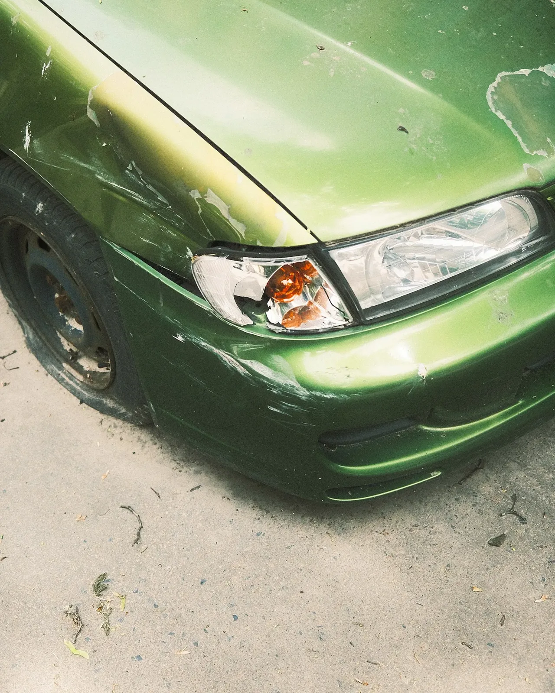
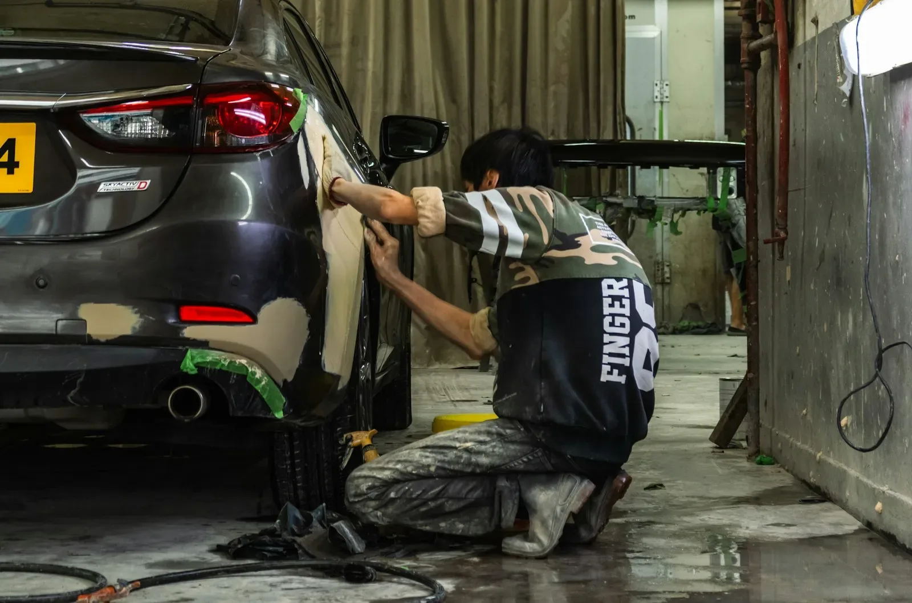
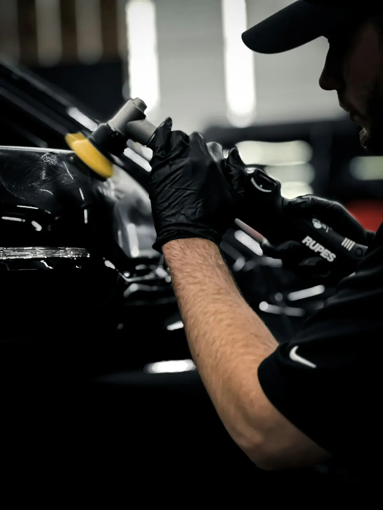

Herstellingen
Alles aan de buitenkant van je wagen.
Van klein tot groot. Je hoort vooraf wat er moet gebeuren en wat het kost, en pas daarna wordt eraan begonnen.

i.
Schadeherstel
Na een aanrijding of een tik bij het parkeren. Uitdeuken, richten en waar nodig een deel vervangen.

ii.
Bumpers
Gebarsten of ingedeukt. Waar het kan wordt hij hersteld, anders vervangen en in de juiste kleur gespoten.

iii.
Spuitwerk
In de spuitcabine, in lagen, met een kleur die wordt afgestemd op de rest van je wagen.

iv.
Afwerking
Polijsten tot de lak overal gelijk glanst, ook rond het herstelde stuk.